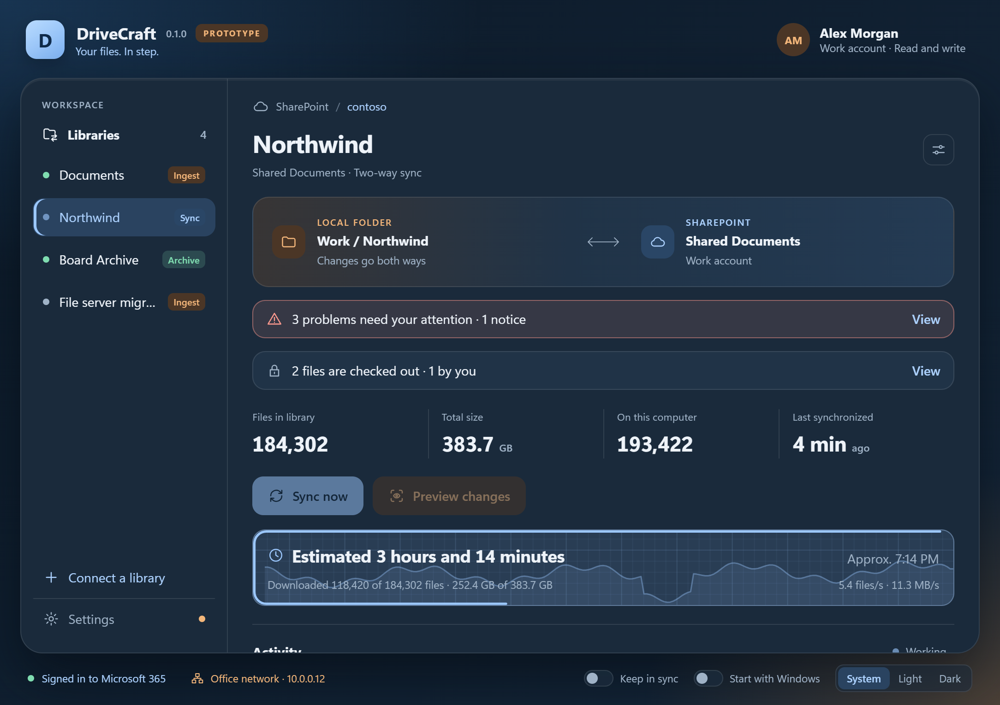

D
DriveCraft
by ThineCraft · open source
Sync for SharePoint and OneDrive for work
Keep every file in reach and under your control.
Two-way sync
Archive
Ingest
drive.thinecraft.io
Windows
MIT License